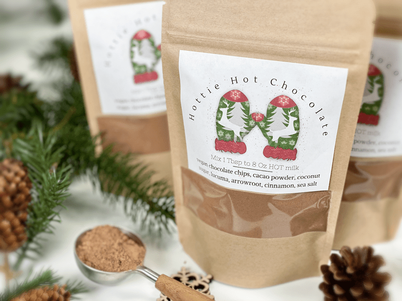
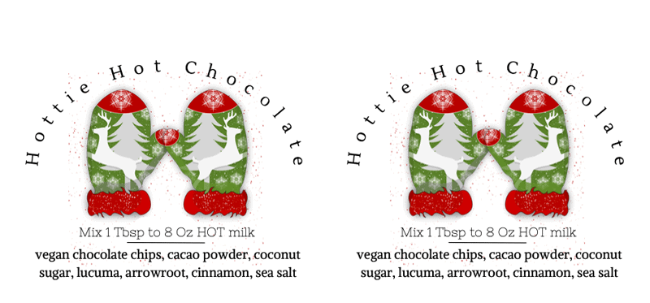
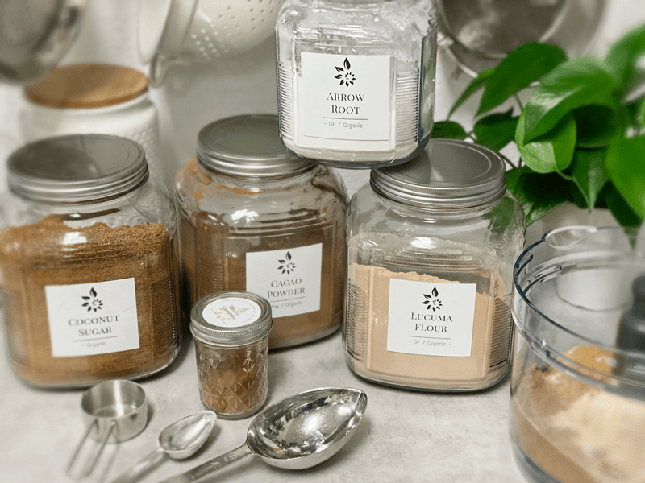
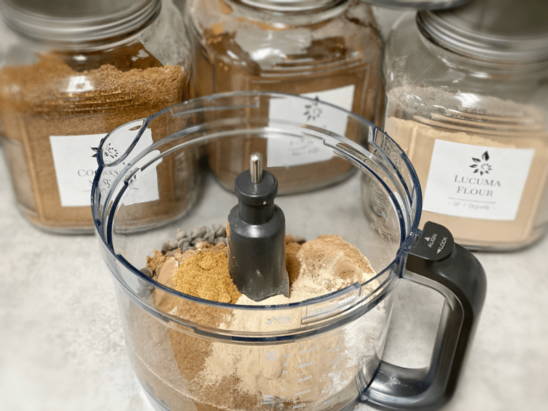
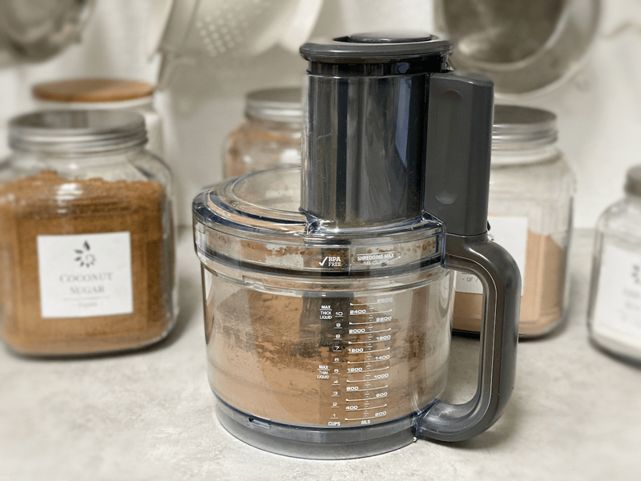
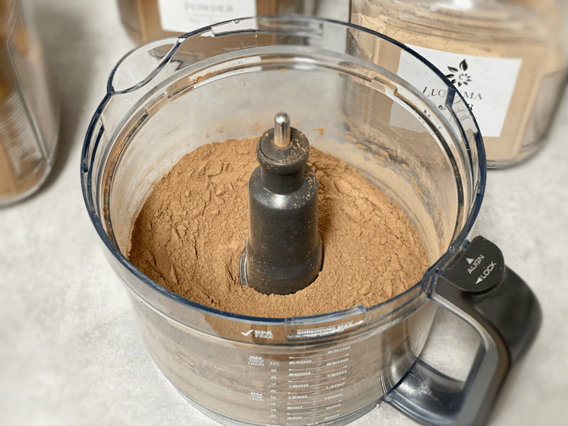
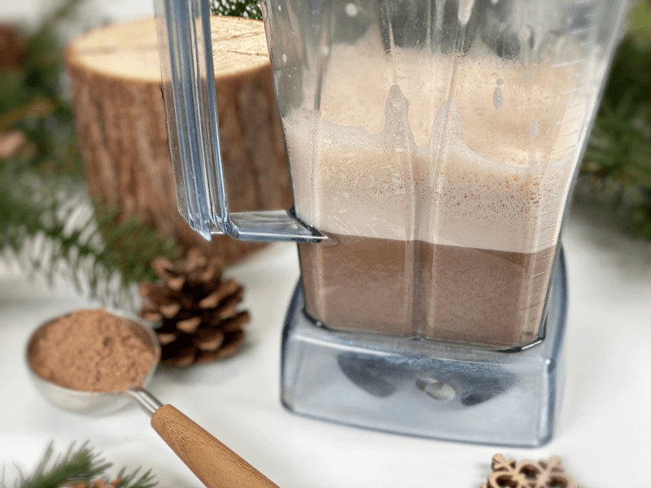
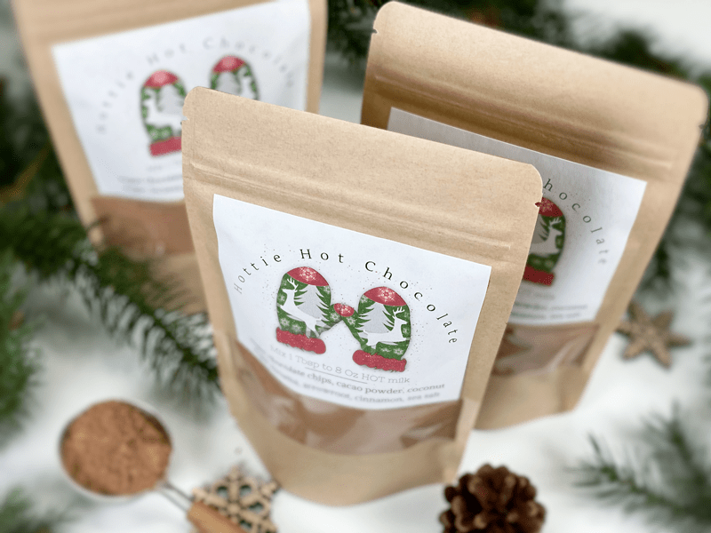

Hottie Hot Chocolate | Label PDF Included
Around our house, hot chocolate is a real treat. As much as I enjoy it, I don’t seem to make it all that much. Hmm. I think it boiled down to convenience? To figure out if it was psychology that was getting in my way, I decided to create some powdered mix versions that I could keep in my pantry. Bingo. Now, the only problem is that I have to hide the hot chocolate mixes from myself so I don’t overindulge. (First- world problems, for sure). This recipe is super easy to make from scratch and good to keep on hand for personal enjoyment or for gift-giving.
Let’s Talk About Milk
The liquid that you choose to use for your cup of hot chocolate will affect the consistency, the mouthfeel, and how it coats your mouth and throat. Non-dairy kinds of milk that are higher in fat will give the hot chocolate a more velvety mouthfeel. You know, the kind that warms your tummy like an embrace.
You can use water, but it won’t be nearly as rich and creamy. Fresh homemade almond milk is my favorite. If you like more viscosity, make your almond milk with less water so it is thicker. Coconut milk is another great option. If you don’t care for the taste of coconut, skip this version, because there will be a slight undertone of coconut… as one might expect. You can also use walnut and pecan milk for a twist on hot chocolate. There are so many possibilities to fall in love with.
Want a Frothy Hot Chocolate?
Are you aiming for a frothy mustache after you take a sip of your hot chocolate? (giggles) If so, the blender is your friend. You can blend and heat the hot chocolate mix and milk in a high-powered blender instead of a pan on the stovetop. Even if you heat the hot chocolate in a pan, pour it into the blender and blend on high for about thirty seconds. This will create a really frothy drink. Be careful when blending hot ingredients. Make sure that the lid is vented so it doesn’t pop off. I go as far as draping a dishcloth over the top while it blends, just to be safe.

Run-Down on Ingredients for This Recipe
- Semi-Sweet Vegan Chocolate Chips: The chocolate chips melt into the mixture, making this drink extra creamy, rich, and luxurious. Use any brand that you like, just pay attention to how dark the chocolate is, and how that will affect the flavor of the hot chocolate.
- Cacao Powder: By itself, it is as bitter as heck. But when combined with the right ingredients, it gives the drink a rich chocolate flavor.
- Coconut Sugar: It is similar in taste to brown sugar, which gives the hot chocolate a deep, caramel or toffee-like flavor.
- Lucuma Powder: Adds a wonderfully complex flavor of butterscotch and sweet potato, with undertones of maple syrup or caramel.
- Arrowroot: I added arrowroot to help create a creamy mouthfeel when whipping up a warm mug of hot chocolate.

Above is a sample of the labels I created. If you wish to print them out here is a PDF – Hottie Hot Chocolate Mix. You can print them out on full-sheet sticker paper or on cardstock. If you go the cardstock route, cut the labels apart, punch a hole in the upper corner, and attach the label to the gift container with a piece of twine. I hope you enjoy this recipe and have a blessed holiday season. amie sue
 Ingredients
Ingredients
Yields 3 cups of mix
Preparation
- Place everything in the food processor.
- When measuring out the ingredients, dip the measuring cup in the ingredient container, lift it out, and level it off with a straight edge.
- If it is really warm in your house, place the chocolate chips in the freezer for 30 minutes; this will help prevent them from softening while in the food processor.
- Process for 20 seconds. If you go by sound alone, it will sound like little rock pebbles whipping around in the bowl to a gentle hum; that is when it’s done.
- Once you are done blending, let the powders settle for a few minutes so you don’t get a cloud of chocolatey-ness in your face.
- Place in an airtight container and store in a dark cabinet to extend the shelf life.
- To make a mug of hot chocolate, add 1-2 Tbsp of mix to 8 oz of plant-based milk.
- You can heat it on the stovetop, or you can place the powder and milk in a blender and blend until warm and frothy.
- The creamier the plant-based milk used, the creamier the hot chocolate will be.
- Here is a link to how I made my vegan whip cream.
-

-
Gather your ingredients.
-

-
Add them to the food processor.
-

-
Blend until well mixed and the chocolate chips have broken down.
-

-
Wait for a few minutes before removing the lid to avoid a powder storm in your face.
-

-
One way of heating and creating froth is blending 1 tablespoon of mix with 1 cup of milk.
-

-
Gift bag idea.
© AmieSue.com